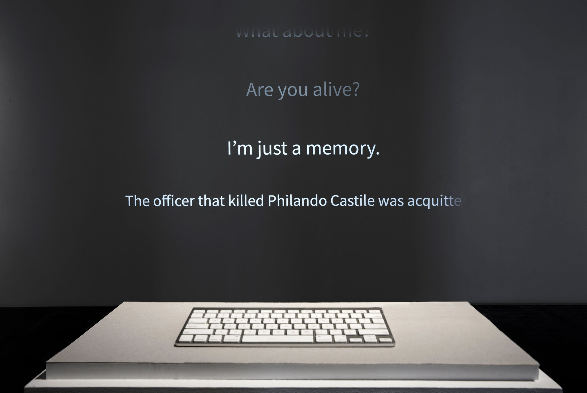

Surveillance Studies
led by Simone Browne and American Artist
Syllabus
Foundational Question: How does thinking about the past allow us to ask questions of our present and create questions of our future? - Simone Browne
We began in complicated regions by contextualizing our understanding of surveillance through learning a bit about its history. Simone Browne displayed an image of a home security system: Patent 3,482,037 filed by Marie Van Brittan Brown and her husband, Albert L Brown. This patent and design was created by a black woman who was concerned with the security and the police response to crime in the Queens in the 60s’. This system in many ways is a community response to the states’ failure to support and protect a community of people.

It brings up these questions: when the state fails to protect us who do we turn to? How do we care for each other? How do we keep each other safe?
For many people when thinking about surveillance and its dark underbelly, we think of giant tech corporations like Google and Amazon or maybe we think of Police Departments and technologies such as PredPol, a tool that American Artist highlighted in their piece “My Blue Window,” which showcased at the Queens Museum. But one cannot help but notice the similarities between Patent 3,482,037 and newer technologies such as, Ring, for example.
Which then brings up even more questions: Who is allowed “safety?” Who is not being surveilled? How is the idea of safety advertised, packaged, and then sold back to us?
American Artist touches a few of these questions and more in their selected pieces they highlighted during this class. “Sandy Speaks,” an AI chat platform they created one year after Sandra Bland died, attempts to fill in the gaps and educate others about police brutality, surveillance, and what happened to Sandra Bland. These gaps exist due to a lack of transparency. These gaps exist because of surveillance, particularly the tricky way that those in power can both selectively reveal information and hide information.
This oscillation between selectively revealing information and intentionally hiding information is a key manipulation tool used to sell us products like Ring and used to push us to do the surveillance work through hidden policies in the applications we download and websites we visit. To make matters even worse, it becomes even more difficult to evade surveillance when our community members take on the role of continuing the surveillance.
American Artist talked about family members wanting to explore ancestry and sending DNA to ancestry.com. Even if they refused participation, so many of their family’s DNA already exist in that database. That database can then fill in its own gaps and draw conclusions on who is missing and what might their DNA look like. Other classmates talked about taking breaks from social media apps such as Instagram, but still having their friends post pictures of them and creating a hashtag in place of tagging an actual profile, essentially creating a living searchable and trackable archive. I sometimes think about how much of other people's data we have intertwined in ours and how much of our data can be accessed through others. We are constantly interacting with each other. We constantly implicate others. Is it then even possible to go off the grid?
Tina, a fellow classmate, suggested there being a possible grading system that grades the level of information that is surveilled. Perhaps, something like this could allow us to make more informed decisions, see the extent of what is being collected from us, and allow us to determine what we are willing to risk in order to gain access or reap the supposed “benefits” of these technologies.
It is important to note, however, that for many things, our participation occurs without us knowing, without our choice. We exist in certain surveillance tools where consent is not important or embedded in the framework. For these, there is no mutual agreement and we have no choice but to trust. I mentioned PredPol earlier, a predictive policing software created to both help prevent and predict crime. It was advertised as a software that is less biased because it uses data instead of human bias. However, a lot of this data is based on past data collected by humans, cops. How do we know if we are being tracked in this software?
On their website, PredPol states, “No personally identifiable information is ever used. No demographic, ethnic or socio-economic information is ever used. This eliminates the possibility for privacy or civil rights violations seen with other intelligence-led or predictive policing models.”
Thinking of the foundational question introduced in this post, it is so important to think about how the past allows us to ask questions of our present and create questions for our future. With past biases and racism embedded in the framework of this technology, so then will they be reproduced in the future unless things changed. But with the obvious obfuscation of the inner workings (once again a selective revealing and intentional withholding) and the transformation of the individual into geography, these tools become harder to check or in their case harder to make the cast for privacy and civil rights violations.
When we cannot trust these tools, what then are our demands around rights for technologies of our present and of our future? This question, I hope to soon answer.
Written by Cy X